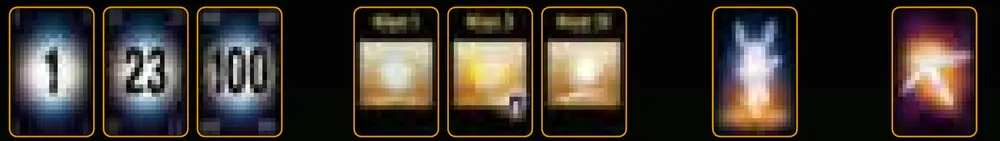
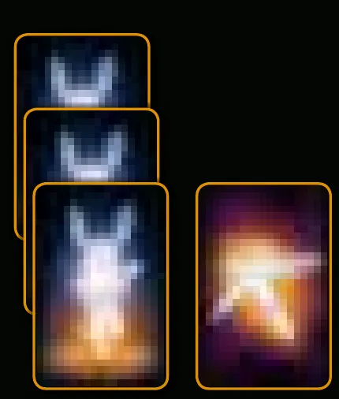
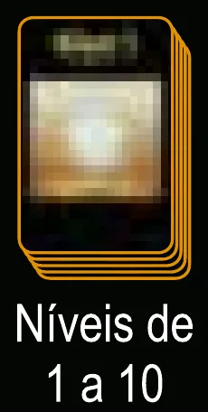
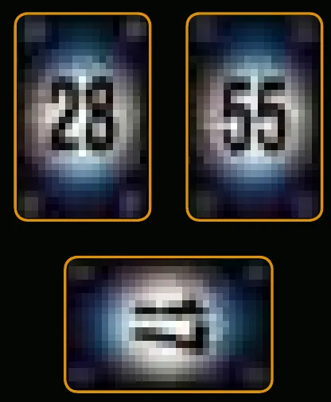
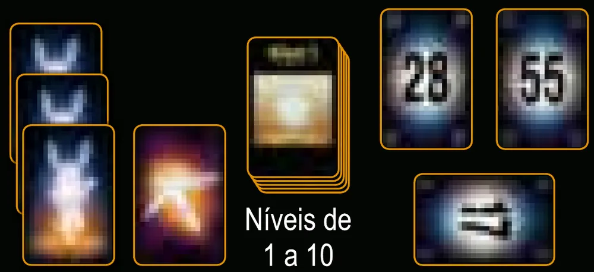
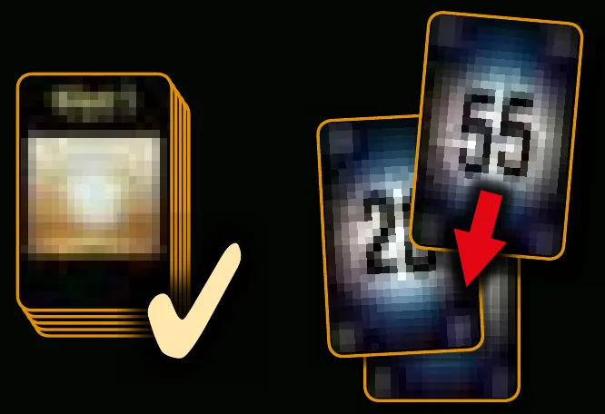
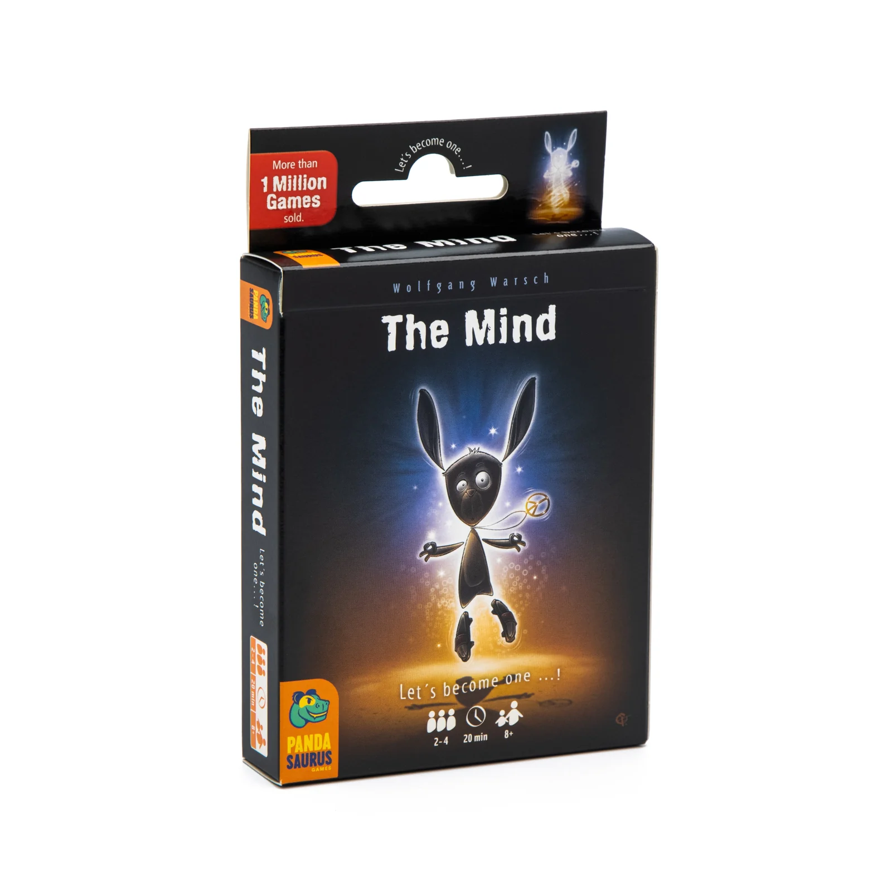
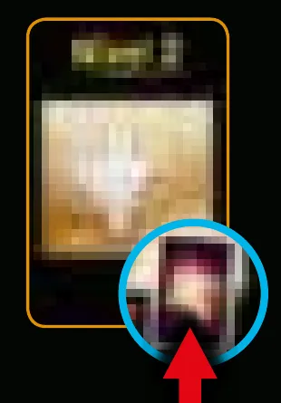

Imagem: Pandasaurus Games · edição dos EUACooperativo · Cartas
Como jogar The Mind
Para quem nunca jogou2 a 4 jogadores20 min8+Edição Galápagos
· Redação Elite Boardgamers
Resumo em 1 minuto
A equipe põe todas as cartas das mãos numa pilha em ordem crescente sem dizer nada sobre elas, nível após nível, e vence ao passar do último nível antes de perder a última vida.
Não há vez de ninguém: quem acha que tem a carta mais baixa joga, sempre a mais baixa da própria mão, e ninguém pode revelar os números.
Uma carta fora de ordem custa uma vida, e todas as cartas mais baixas que ela são descartadas; o nível continua.
A estrela ninja, se todos concordarem, faz cada um descartar a carta mais baixa; os níveis 2, 3, 5, 6, 8 e 9 dão recompensa.
Como você aprende: 3 etapas, da mesa montada à contagem de pontosLeitura do essencial: cerca de 5 min
À vista, só o essencial para jogar. O que abre com + é explicação, exemplo, exercício ou regra de caso especial: abra quando precisar.
Montar a mesa passo a passo
A montagem segue a "Preparação" do manual p. 1, na mesma ordem, com cada ação num passo.
Componentes da caixap. 1
Componente
Quantidade
Para que serve
Cartas com números
100 (de 1 a 100)
As cartas que a equipe tenta pôr em ordem crescente
Cartas de nível
12 (níveis 1 a 12)
Mostram em que nível a equipe está e, em alguns níveis, a recompensa
Cartas de vida
5
Cada erro custa uma vida; sem vidas, a equipe perde
Estrelas ninja
3
Fazem todos descartarem a carta mais baixa da mão

Os componentes: cartas com números (1, 23 e 100), três cartas de nível, uma carta de vida e uma estrela ninja. Ilustração: manual Galápagos p. 1
Os passosp. 1
1. Vidas e estrelas ninja da equipe. A equipe recebe as vidas e estrelas ninja da tabela no fim desta seção (com 3 jogadores, 3 vidas e 1 estrela ninja), e elas ficam abertas sobre a mesa, viradas para cima p. 1.

Passo 1, numa partida de 3 jogadores: as 3 vidas da equipe, uma sobre a outra, e 1 estrela ninja, abertas na mesa. Ilustração: manual Galápagos p. 1
2. O resto das vidas e estrelas, de lado. As vidas e estrelas ninja que sobraram ficam separadas, num canto da mesa, porque podem entrar mais tarde como recompensa p. 1 e 2. Não as misture com as da equipe.
3. Pilha de níveis. Junte as cartas de nível que a partida usa (veja a tabela), em ordem crescente, numa pilha virada para cima, com o nível 1 no topo p. 1.

Passo 3, com 3 jogadores: a pilha de níveis de 1 a 10, virada para cima, com o nível 1 no topo. Ilustração: manual Galápagos p. 1
4. Níveis que sobram, na caixa. As cartas de nível que a partida não usa voltam para a caixa p. 1. Com 4 jogadores, por exemplo, os níveis 9 a 12 não entram.
5. Embaralhar e dar as cartas do nível 1. Embaralhe as 100 cartas com números e dê 1 carta a cada jogador. Cada um segura a sua carta na mão sem deixar que os outros vejam p. 1.
6. O resto do baralho. As cartas com números que sobram formam uma pilha virada para baixo, de lado p. 1. Ela não é usada durante o nível; só volta a ser embaralhada no nível seguinte p. 2.

Passo 5: cada jogador com a sua carta (aqui, 28 e 55; a terceira está deitada, de lado). Ilustração: manual Galápagos p. 1

A mesa pronta para 3 jogadores, como no exemplo do manual: 3 vidas, 1 estrela ninja, a pilha de níveis de 1 a 10 e uma carta para cada um. Ilustração: manual Galápagos p. 1
O que muda com o número de jogadores (p. 1; contas do guia nas três últimas colunas)
Jogadores
Níveis
Vidas da equipe
Estrelas ninja da equipe
De lado, para recompensa
Níveis que voltam à caixa
2
1 a 12
2
1
3 vidas e 2 estrelas
nenhum
3
1 a 10
3
1
2 vidas e 2 estrelas
11 e 12
4
1 a 8
4
1
1 vida e 2 estrelas
9 a 12
O que volta para a caixa. Só as cartas de nível que a partida não usa p. 1. As vidas e estrelas que sobram ficam de lado na mesa, não na caixa.
Quem começa. Ninguém. The Mind não tem ordem de jogadores nem turnos: quem achar que tem a carta mais baixa da mesa a joga p. 1. Antes da primeira carta, a equipe se concentra junta, como mostra a próxima seção.
Antes de começar, confira: vidas e estrelas ninja da equipe abertas na mesa, na quantidade da tabela; o restante das vidas e estrelas separado; a pilha de níveis virada para cima, com o nível 1 no topo e sem os níveis que não se usam; uma carta com número na mão de cada jogador, escondida; o resto do baralho virado para baixo.
Partida de 4 jogadores. Quantas vidas a equipe põe na mesa no começo, e até que nível vai a partida?
Com 4 jogadores: níveis 1 a 8, 4 vidas e 1 estrela ninja p. 1.
Comece a jogar em 4 minutos
Meta: em 4 minutos de leitura, montar a mesa e jogar o primeiro nível sem abrir o manual.
A ideia do jogo
Todos jogam juntos, como uma equipe, contra o jogo. Em cada nível, a equipe precisa pôr todas as cartas das mãos numa única pilha no meio da mesa, em ordem crescente, sem dizer nada sobre os números que tem. Não há vez de ninguém: quem acha que tem a carta mais baixa joga. Cada erro custa uma vidap. 1 e 2.
Monte a mesa
Resumo da seção "Montar a mesa passo a passo", acima p. 1.
Na mesa, abertas: vidas iguais ao número de jogadores e 1 estrela ninja. O resto das vidas e estrelas, de lado.
Pilha de níveis virada para cima, nível 1 no topo: até o 12 com 2 jogadores, o 10 com 3, o 8 com 4.
Embaralhe as 100 cartas com números e dê 1 a cada jogador; o resto fica virado para baixo, de lado.
Seu primeiro turno
The Mind não tem turnos: o "primeiro turno", aqui, é o primeiro nível. No nível 1, cada jogador tem uma carta. O nível acontece assim p. 1:
Concentrem-se. Quem estiver pronto põe a palma da mão sobre a mesa. Quando todos estiverem com a mão na mesa, todos a retiram, e o nível começa.
Jogar. Quem acha que tem a carta mais baixa das mãos a põe no centro da mesa, virada para cima. A carta seguinte vai em cima dela, e assim por diante: uma carta de cada vez, sempre maior que a anterior.
Sem falar dos números. Ninguém pode mostrar a carta, dizer o número, dar pista, fazer acordo ou usar sinal secreto.
Vencer o nível. Quando todas as cartas estão na pilha, em ordem crescente, a equipe venceu o nível.
A qualquer momento, alguém pode dizer "Pausa": todos põem uma mão na mesa, se concentram, retiram a mão e voltam a jogar p. 1.

O nível 1 vencido, no exemplo do manual: 17, depois 28, depois 55, sempre em ordem crescente. Ilustração: manual Galápagos p. 1
Ainda não precisa saber
O que acontece quando alguém erra a ordem e como funciona a estrela ninja: etapa 2. Como se passa de nível e as recompensas: etapa 3. O modo cego, depois de vencer todos os níveis: etapa 3.
Como a partida acaba: vencer todos os níveis ou perder a última vida
A cada nível, cada jogador recebe uma carta a mais que no anterior: 2 no nível 2, 3 no nível 3, e assim por diante p. 1 e 2. Se a equipe vence o último nível da partida, vence o jogo. Se perde a última vida, perde o jogo p. 2.
Prefere ver? O vídeo é de The Mind Extreme, que tem regras diferentes: cartas brancas e vermelhas, de 1 a 50 cada; duas pilhas ao mesmo tempo, uma crescente e outra decrescente; níveis com cartas viradas para baixo; a estrela ninja funciona de outro jeito; e a pausa se chama "Parem". Concentração, vidas e níveis seguem a ideia da caixa básica. Ele complementa este guia; em caso de diferença, vale o manual.
THE MIND: Extreme - Regras + review!, canal Duque Board Games · abrir no YouTube
0Antes de tudo: o que é este jogoOpcional

Imagem: Pandasaurus Games · edição dos EUAAbrir esta seção
The Mind é um jogo de cartas cooperativo de Wolfgang Warsch, para 2 a 4 jogadores a partir de 8 anos, com cerca de 20 minutos de partida p. 1. A equipe vence ou perde junta. Em cada nível, todas as cartas das mãos precisam formar uma pilha em ordem crescente sem que ninguém diga nada sobre o que tem; cada nível dá uma carta a mais a cada um, e cada erro custa uma vida p. 1 e 2.
A regra cabe em poucas linhas; o que se aprende jogando é o ritmo. O manual guarda o segredo do jogo num quadro impresso de cabeça para baixo e recomenda que jogadores experientes joguem a primeira partida sem lê-lo p. 1 e 2. O guia respeita isso: a ideia do quadro aparece só na etapa 1, num bloco que você abre se quiser.
1Como este guia ensinaOpcional
Imagem: Pandasaurus Games · edição dos EUAAbrir esta seção
Três etapas, na ordem da partida: jogar um nível; errar e usar a estrela ninja; passar de nível e terminar. Cada uma tem Para entender, Passo a passo, regras de caso especial à parte e tarefas com ajuda decrescente: exemplo resolvido, complete e sua vez. Toque numa opção para ver a certa e a explicação. No fim, uma avaliação diz o que reler, e a folha de consulta vai para a mesa.
2Etapa 1: jogar um nível
Imagem: Pandasaurus Games · edição dos EUAPor que funciona assimRegra adicional: PausaRegra adicional: Cartas seguidas na mesma mãoPor que funciona assimDica: Sugestão: conte a distância, não o númeroVer um exemplo resolvidoPratique esta etapa: exercícios com respostas
3Etapa 2: errar e usar a estrela ninja
Imagem: Pandasaurus Games · edição dos EUAPor que funciona assimVer um exemplo resolvidoSobre a edição: Para onde vão a vida perdida e a estrela usadaSobre a edição: Quem está sem cartas e a estrela ninjaVer um exemplo resolvidoPratique esta etapa: exercícios com respostas
4Etapa 3: passar de nível e terminar a partida
Por que funciona assim

Uma carta de nível com o símbolo da recompensa no canto inferior direito. Ilustração: manual Galápagos p. 2Sobre a edição: Recompensa com a equipe no máximoRegra adicional: Novo desafio: modo cegoSobre a edição: Modo cego com mais de um erroVer um exemplo resolvidoPratique esta etapa: exercícios com respostas
5Situações especiaisOpcional
Imagem: Pandasaurus Games · edição dos EUAAbrir esta seçãoSobre a edição: Duas cartas ao mesmo tempoSobre a edição: O erro descarta as últimas cartas
6Avaliação finalOpcional
Imagem: Pandasaurus Games · edição dos EUAAbrir esta seção
Responda sem consultar. Cada resposta diz o que reler.
1. Partida de 3 jogadores. Até que nível a equipe precisa chegar para vencer?
Com 3 jogadores, níveis 1 a 10 p. 1. Releia a montagem.
2. Quem joga a primeira carta de um nível?
Não há ordem de jogo p. 1. Releia a etapa 1.
3. Paula joga a 34; Danilo tem 26, e Felipe tem 30. Quantas vidas a equipe perde?
Um erro custa uma vida; as cartas abaixo de 34 são descartadas p. 2. Releia a etapa 2.
4. A equipe usa uma estrela ninja. O que cada jogador faz?
Todos os jogadores descartam a carta mais baixa, virada para cima p. 2. Releia a etapa 2.
5. Qual destes níveis dá recompensa?
Dão recompensa os níveis 2, 3, 5, 6, 8 e 9; ela aparece no canto inferior direito da carta p. 2. Releia a etapa 3.
7Para consultar durante a partida
Imagem: Pandasaurus Games · edição dos EUA
Preparação
Jogadores
Níveis
Vidas
Estrelas ninja
2
1 a 12
2
1
3
1 a 10
3
1
4
1 a 8
4
1
Um nível
Cartas do nível: tantas quanto o número do nível, para cada jogador.
Todos com a mão na mesa; todos retiram; começa.
Quem achar que tem a carta mais baixa joga, uma por vez, sempre a mais baixa da própria mão.
Nada de falar, mostrar, combinar ou sinalizar números.
"Pausa" a qualquer momento: mão na mesa, concentrar, retirar, seguir.
Erro: quem tem carta menor interrompe; a equipe perde 1 vida; todos descartam as cartas abaixo da jogada; concentrar e seguir no mesmo nível.
Estrela ninja: alguém levanta a mão; se todos concordam, cada um descarta a carta mais baixa, virada para cima; concentrar e seguir.
Nível vencido: recompensa nos níveis 2, 3, 5, 6, 8 e 9 (vida ou estrela, desenhada no canto inferior direito da carta); depois, carta do nível na caixa; máximo de 5 vidas e 3 estrelas; embaralhar as 100 cartas e dar uma a mais para cada um.
Fim: a equipe vence ao passar do último nível e perde ao perder a última vida. Depois da vitória, se quiserem: modo cego, cartas viradas para baixo, conferidas no fim de cada nível.
Regras conferidas nas regras da edição brasileira de The Mind (Galápagos, código TMI001, versão 1.0, novembro de 2023), baixadas da biblioteca de downloads da Asmodee Brasil. A folha de regras não tem número impresso nas páginas: o guia chama a frente de p. 1 e o verso de p. 2.